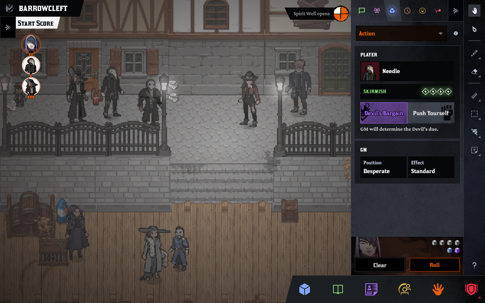
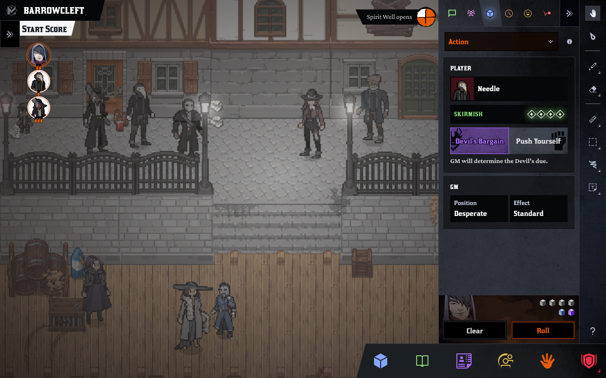

Reinventing
Learner-Centered Syllabi
One More Multiverse (OMM) was a highly ambitious platform for telling cinematic stories with tabletop games. We created custom gameplay experiences for Dungeons & Dragons, Blades in the Dark, and Yazeba's Bed and Breakfast. As OMM's Design Lead I led both Product Design and Playtesting efforts for the launch of the platform and releases of all three games.
Product Designer
User Testing
UX Design
Visual Design
 


Please reach out to christina@cdacanay.com
for more information